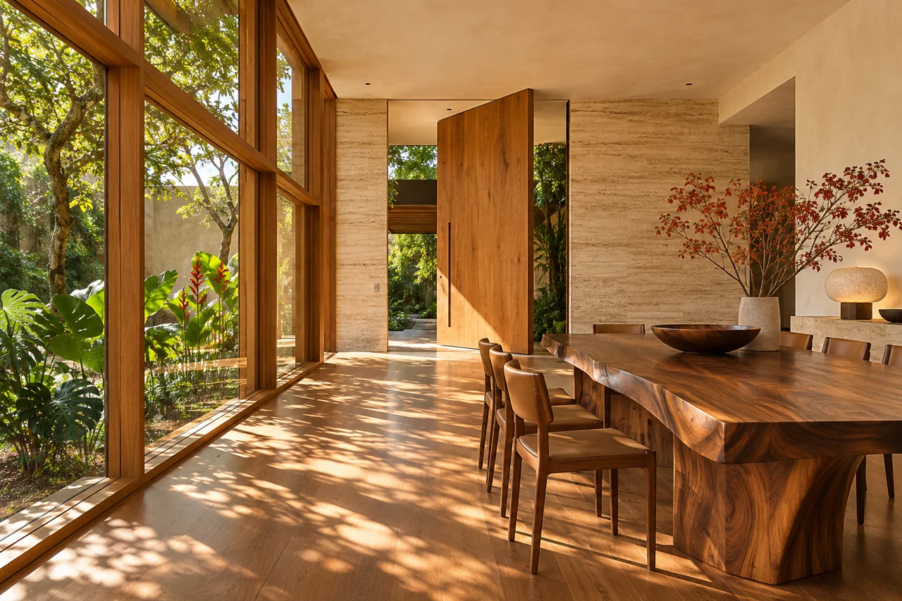
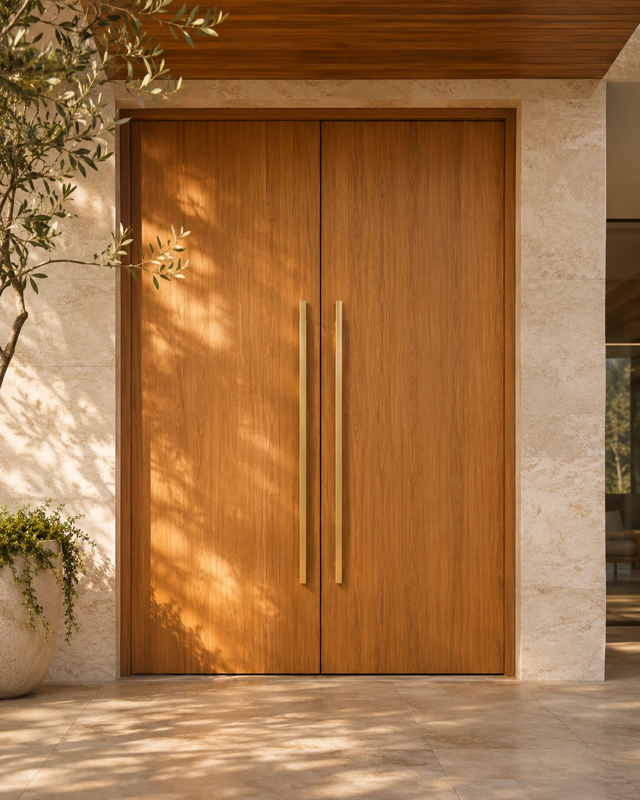

DA ENTRADA AO ENCONTRO

01 / UM NOVO OLHAR
Há escolhas que mudam a maneira de sentir um espaço. A luz que entra. A textura que acolhe. A madeira que dá personalidade ao ambiente.

DA ENTRADA AO ENCONTRO
02 / EXPLORE POSSIBILIDADES
Uma seleção de referências para imaginar o seu próximo projeto.
Imagens conceituais geradas por IA. Referências de inspiração, não um catálogo de produtos ou projetos realizados.
03 / A BELEZA ESTÁ NO DETALHE
Veios, texturas e tonalidades. A madeira traz uma expressão própria para cada composição.
O desenho natural como parte da arquitetura.
Explore combinações de madeira, luz e materiais para o seu espaço.
UM CONVITE A PERMANECER
04 / REI DAS PORTAS
Queremos fazer parte da conversa sobre o seu ambiente. Compartilhe suas referências, suas necessidades e o que você imagina para o espaço.
01Seu espaço como ponto de partida.
02Inspiração em cada detalhe.
03Uma conversa direta sobre o projeto.
VAMOS DAR FORMA À SUA IDEIA?
Fale com a Rei das Portas pelo WhatsApp.